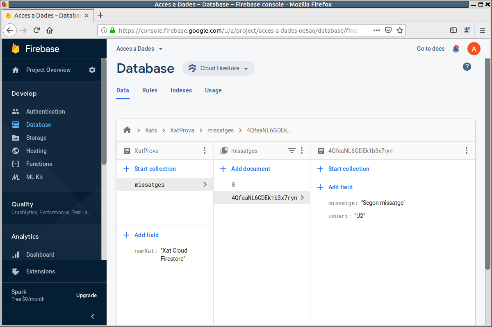

2.3.1 CF: Utilització des de l'entorn de Firebase
Amb el Cloud Firestore ja podrem guardar més d'un document, i aniran agrupats en col·leccions de documents. En el següent vídeo anem a insistir en aquest aspecte dels documents, ja que és el més novedós.
Hem de fer la consideració de que encara que treballem sobre la mateixa Base de Dades de Firebase, des de Cloud Firestore no podrem accedir a les dades de Realtime Database, i a l'inrevés.
Aquesta és l'estructura de dades que ens hem guardat en l'exemple:

Observeu també que dins d'un document d'una col·lecció es pot començar una col·lecció i dins d'ella crear documents, etc. De manera que ho podem fer recursiu, i s'enriqueixen molt les possibilitats de disseny de la nostra Base de Dades. Anem a aprofundir en aquesta possibilitat de les subcol·leccions per a redissenyar les dades del nostre exemple del xat.
Subcol·leccions
Com es veia en l'última imatge, es poden crear subcol·leccions en un document, i aquestes col·leccions contenir a la seua vegada tots els documents que calga.
Aleshores ens redissenyarem el xat construït en la part de Realtime Database. En aquell moment vam posar tots els missatges del xat en un llista. Ens anava molt bé, perquè després posàvem un listener sobre la clau del xat que detectava tots els elements nous: el addChildEventListener().
Tanmateix en el Cloud Firestore no tindrem el listener anterior. El que sí que disposarem és d'un listener que detecte els nous documents sobre una col·lecció. Aleshores anem a muntar cada missatge del xat com un nou document, que de moment només tindrà usuari i missatge.
Per tant, després de l'anterior tenim una col·lecció anomenada Xats, dins de la qual hi ha un document anomenat XatProva, dins del qual hi ha un camp anomenat nomXat i una col·lecció anomenada missatges, dins del qual hi ha dos documents, un d'ells amb nom 0 i un altre amb nom generat per Cloud Firestore
